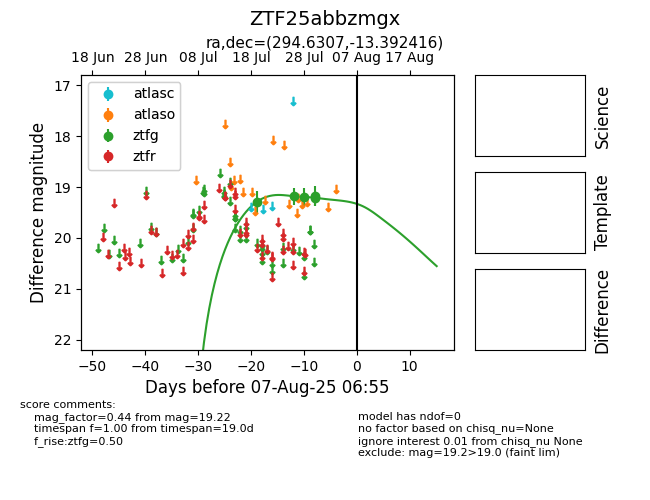

Target ZTF25abbzmgx at 2025-08-07 07:30, see:
FINK: fink-portal.org/ZTF25abbzmgx
Lasair: lasair-ztf.lsst.ac.uk/objects/ZTF25abbzmgx
ALeRCE: alerce.online/object/ZTF25abbzmgx
alt names
ZTF25abbzmgx (ztf,fink)
coordinates:
equatorial (ra, dec) = (294.6307,-13.39242)
galactic (l, b) = (26.0083,-16.39386)
photometry
last ztfg=19.22
5 ztfg detections
